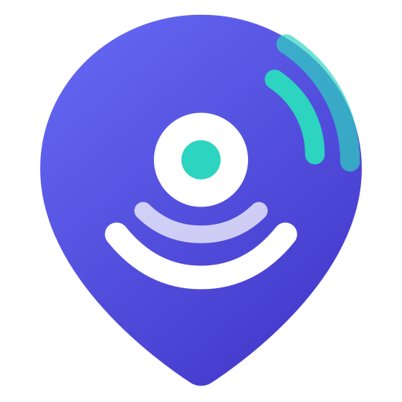

Tagged on every beacon you save, so teammates know who left it — and it powers the "All people" filter above.
From your Supabase project: Settings → API → copy the Project URL and the anon public key. Both teammates use the same values.
Ask whoever set up the Supabase project to add an account for you under Authentication → Users.
Signed in as
Not connected yet.
Open Connection above to link your Supabase project and sign in — that's what lets you and your colleague see each other's beacons instantly.
No beacons saved yet.
Click the BeaconNest icon in your toolbar while on any page to save the exact spot you're looking at.